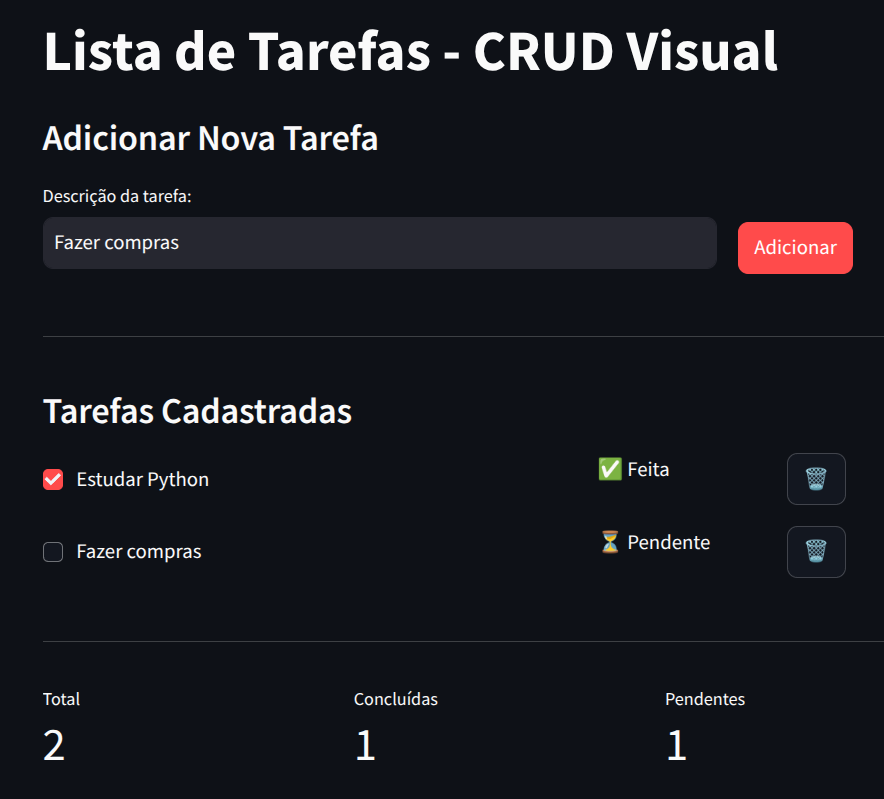

Organizando Interfaces e Criando Aplicações com Streamlit
book_2 Organização de Layouts
book_2 Páginas e Estados
engineering Mini-Projeto Prático
O st.columns() permite dividir o layout em colunas horizontais, criando interfaces mais organizadas e compactas.
import streamlit as st
col1, col2 = st.columns(2) # 2 colunas de tamanho igual
with col1:
st.header("Coluna 1")
st.write("Conteúdo da primeira coluna")
with col2:
st.header("Coluna 2")
st.write("Conteúdo da segunda coluna")
col1, col2, col3 = st.columns([3, 1, 1]) # Proporção 3:1:1
with col1:
st.write("Coluna maior")
with col2:
st.write("Menor")
with col3:
st.write("Menor")
O st.expander() cria seções recolhíveis, ideal para organizar conteúdo opcional ou detalhes adicionais.
with st.expander("Ver detalhes"):
st.write("Informações adicionais que podem ser ocultadas")
st.code("codigo_exemplo = 'Python'")
with st.expander("Configurações avançadas", expanded=True):
st.slider("Parâmetro 1", 0, 100)
st.selectbox("Opção", ["A", "B", "C"])
import streamlit as st
st.title("Dashboard de Vendas")
# Layout com colunas
col1, col2, col3 = st.columns(3)
with col1:
st.metric("Vendas Hoje", "R$ 1.234", "+12%")
with col2:
st.metric("Clientes", "45", "+3")
with col3:
st.metric("Ticket Médio", "R$ 27,42", "-5%")
# Detalhes em expander
with st.expander("Ver análise detalhada"):
st.write("**Período:** Últimos 7 dias")
detail_col1, detail_col2 = st.columns(2)
with detail_col1:
st.write("**Top Produtos:**")
st.write("1. Produto A - R$ 450")
st.write("2. Produto B - R$ 380")
with detail_col2:
st.write("**Horários de Pico:**")
st.write("> 10h-12h: 35%")
st.write("> 14h-16h: 28%")
Objetivo: Crie um layout com 3 colunas que exiba informações de um produto: na primeira coluna o nome do produto, na segunda o preço e na terceira a quantidade em estoque.
import streamlit as st
st.title("Informações do Produto")
col1, col2, col3 = st.columns(3)
with col1:
st.subheader("Nome")
st.write("Notebook Dell")
with col2:
st.subheader("Preço")
st.write("R$ 3.499,00")
with col3:
st.subheader("Estoque")
st.write("15 unidades")
Objetivo: Crie uma interface com duas seções usando expanders: uma chamada "Dados Pessoais" contendo nome e email em colunas, e outra chamada "Endereço" contendo rua e cidade em colunas
import streamlit as st
st.title("Cadastro de Cliente")
with st.expander("Dados Pessoais", expanded=True):
col1, col2 = st.columns(2)
with col1:
st.text_input("Nome completo", value="João Silva")
with col2:
st.text_input("Email", value="joao@email.com")
with st.expander("Endereço"):
col1, col2 = st.columns(2)
with col1:
st.text_input("Rua", value="Rua das Flores, 123")
with col2:
st.text_input("Cidade", value="Salvador")
Criar navegação entre páginas usando um selectbox no topo da aplicação.
import streamlit as st
st.title("Minha Aplicação Multi-página")
# Menu de navegação
pagina = st.selectbox(
"Escolha a página:",
["Home", "Cadastro", "Relatórios"]
)
# Renderização condicional
if pagina == "Home":
st.header("🏠 Bem-vindo!")
st.write("Esta é a página inicial da aplicação.")
st.info("Use o menu acima para navegar entre as páginas.")
elif pagina == "Cadastro":
st.header("📝 Cadastro de Usuário")
nome = st.text_input("Nome")
idade = st.number_input("Idade", 0, 120)
if st.button("Salvar"):
st.success(f"Usuário {nome} cadastrado com sucesso!")
elif pagina == "Relatórios":
st.header("📊 Relatórios")
tipo = st.radio("Tipo de relatório:", ["Mensal", "Anual"])
st.write(f"Exibindo relatório {tipo.lower()}...")
A sidebar é ideal para menus permanentes e acessíveis em todas as páginas.
import streamlit as st
st.sidebar.title("Navegação")
pagina = st.sidebar.radio(
"Ir para:",
["Dashboard", "Produtos", "Configurações"]
)
# Adicionar informações extras na sidebar
st.sidebar.markdown("---")
st.sidebar.info("Versão 1.0.0")
# Conteúdo das páginas
if pagina == "Dashboard":
st.title("📈 Dashboard Principal")
col1, col2, col3 = st.columns(3)
with col1:
st.metric("Total Vendas", "R$ 45.231")
with col2:
st.metric("Produtos", "127")
with col3:
st.metric("Usuários", "1.234")
elif pagina == "Produtos":
st.title("🛍️ Gestão de Produtos")
st.write("Lista de produtos cadastrados:")
st.write("• Produto A")
st.write("• Produto B")
st.write("• Produto C")
elif pagina == "Configurações":
st.title("⚙️ Configurações")
st.checkbox("Modo escuro")
st.checkbox("Notificações por email")
st.selectbox("Idioma", ["Português", "English", "Español"])
Para aplicações mais complexas, você pode criar menus com subpáginas:
import streamlit as st
st.sidebar.title("Menu Principal")
# Menu principal
secao = st.sidebar.radio("Seção:", ["Vendas", "Estoque", "Relatórios"])
# Submenus condicionais
if secao == "Vendas":
subsecao = st.sidebar.selectbox(
"Vendas - Opções:",
["Nova Venda", "Histórico", "Cancelamentos"]
)
st.title(f"Vendas > {subsecao}")
elif secao == "Estoque":
subsecao = st.sidebar.selectbox(
"Estoque - Opções:",
["Consultar", "Entrada", "Saída"]
)
st.title(f"Estoque > {subsecao}")
elif secao == "Relatórios":
subsecao = st.sidebar.selectbox(
"Relatórios - Opções:",
["Financeiro", "Produtos", "Clientes"]
)
st.title(f"Relatórios > {subsecao}")
Objetivo: Crie uma aplicação com menu selectbox que tenha 3 páginas: "Início" (mostra uma mensagem de boas-vindas), "Calculadora" (dois inputs numéricos e um botão que soma os valores) e "Sobre" (mostra informações sobre a aplicação).
import streamlit as st
st.title("Mini Aplicação")
pagina = st.selectbox("Navegação:", ["Início", "Calculadora", "Sobre"])
if pagina == "Início":
st.header("Bem-vindo!")
st.write("Esta é uma aplicação de exemplo com múltiplas páginas.")
st.balloons()
elif pagina == "Calculadora":
st.header("Calculadora Simples")
col1, col2 = st.columns(2)
with col1:
num1 = st.number_input("Primeiro número:", value=0.0)
with col2:
num2 = st.number_input("Segundo número:", value=0.0)
if st.button("Somar"):
resultado = num1 + num2
st.success(f"Resultado: {resultado}")
elif pagina == "Sobre":
st.header("Sobre esta aplicação")
st.write("**Desenvolvida com:** Streamlit")
st.write("**Versão:** 1.0")
st.write("**Autor:** Aluno do Tutorial")
O st.file_uploader() permite que usuários façam carga de dados hospedados em arquivos para a aplicação.
import streamlit as st
st.title("Upload de Arquivos")
arquivo = st.file_uploader("Escolha um arquivo", type=["txt", "csv"])
if arquivo is not None:
st.success("Arquivo carregado com sucesso!")
st.write("**Nome do arquivo:**", arquivo.name)
st.write("**Tamanho:**", arquivo.size, "bytes")
st.write("**Tipo:**", arquivo.type)
import streamlit as st
st.title("Leitor de Arquivos de Texto")
arquivo_txt = st.file_uploader("Upload arquivo .txt", type=["txt"])
if arquivo_txt is not None:
# Ler conteúdo como string
conteudo = arquivo_txt.read().decode("utf-8")
st.subheader("Conteúdo do arquivo:")
st.text_area("Visualização", conteudo, height=300)
# Estatísticas
col1, col2, col3 = st.columns(3)
with col1:
st.metric("Caracteres", len(conteudo))
with col2:
st.metric("Palavras", len(conteudo.split()))
with col3:
st.metric("Linhas", len(conteudo.split('\n')))
import streamlit as st
import pandas as pd
st.title("Leitor de Arquivos CSV")
arquivo_csv = st.file_uploader("Upload arquivo .csv", type=["csv"])
if arquivo_csv is not None:
# Ler CSV com pandas
df = pd.read_csv(arquivo_csv)
st.success(f"Arquivo carregado: {arquivo_csv.name}")
# Informações sobre o dataset
col1, col2 = st.columns(2)
with col1:
st.metric("Linhas", df.shape[0])
with col2:
st.metric("Colunas", df.shape[1])
# Visualização
st.subheader("Primeiras linhas:")
st.dataframe(df.head())
# Expandir para ver mais opções
with st.expander("Ver todas as colunas"):
st.write(df.columns.tolist())
with st.expander("Ver estatísticas"):
st.write(df.describe())
import streamlit as st
st.title("Upload Múltiplo de Arquivos")
arquivos = st.file_uploader(
"Escolha um ou mais arquivos",
type=["txt", "csv", "pdf"],
accept_multiple_files=True
)
if arquivos:
st.write(f"**{len(arquivos)} arquivo(s) carregado(s):**")
for arquivo in arquivos:
col1, col2, col3 = st.columns([3, 1, 1])
with col1:
st.write(arquivo.name)
with col2:
st.write(f"{arquivo.size} bytes")
with col3:
st.write(arquivo.type)
Objetivo: Crie uma aplicação que permita upload de um arquivo .txt e exiba: o conteúdo do arquivo, a primeira palavra do texto e a última palavra do texto.
import streamlit as st
st.title("Analisador de Texto")
arquivo = st.file_uploader("Faça upload de um arquivo .txt", type=["txt"])
if arquivo is not None:
conteudo = arquivo.read().decode("utf-8")
st.subheader("Conteúdo completo:")
st.text_area("Texto", conteudo, height=200)
# Separar palavras
palavras = conteudo.split()
if palavras:
col1, col2 = st.columns(2)
with col1:
st.info(f"**Primeira palavra:** {palavras[0]}")
with col2:
st.info(f"**Última palavra:** {palavras[-1]}")
else:
st.warning("O arquivo está vazio!")
O Session State é um recurso fundamental do Streamlit que permite
armazenar e persistir variáveis entre as execuções (reruns) da
aplicação.
Sempre que um usuário interage com um widget (clica
em um botão, digita em um campo, etc.), o Streamlit reexecuta todo
o script do zero. Sem o Session State, todas as variáveis seriam
perdidas a cada interação.
import streamlit as st
# Este contador NÃO funciona como esperado
contador = 0
if st.button("Incrementar"):
contador += 1 # Valor é perdido no próximo rerun
st.write(f"Contador: {contador}") # Sempre mostra 0
import streamlit as st
# Inicializar o contador no Session State
if 'contador' not in st.session_state:
st.session_state.contador = 0
if st.button("Incrementar"):
st.session_state.contador += 1 # Valor persiste!
st.write(f"Contador: {st.session_state.contador}") # Mostra o valor real
import streamlit as st
# Acessar
valor = st.session_state.minha_variavel
# Modificar
st.session_state.minha_variavel = "novo valor"
# Incrementar
st.session_state.contador += 1
# Adicionar item em lista
st.session_state.lista.append("novo item")
# Atualizar dicionário
st.session_state.config['tema'] = 'escuro'
import streamlit as st
st.title("🔐 Sistema de Login com Session State")
# Inicializar estados
if 'logado' not in st.session_state:
st.session_state.logado = False
if 'usuario' not in st.session_state:
st.session_state.usuario = None
if 'tentativas' not in st.session_state:
st.session_state.tentativas = 0
# Usuários simulados (em produção, use banco de dados!)
usuarios_validos = {
'admin': '123456',
'usuario': 'senha123',
'convidado': 'guest'
}
# Função para fazer login
def fazer_login(username, password):
if username in usuarios_validos and usuarios_validos[username] == password:
st.session_state.logado = True
st.session_state.usuario = username
st.session_state.tentativas = 0
return True
else:
st.session_state.tentativas += 1
return False
# Função para fazer logout
def fazer_logout():
st.session_state.logado = False
st.session_state.usuario = None
# Interface
if not st.session_state.logado:
# Tela de Login
st.subheader("Faça Login")
with st.form("form_login"):
username = st.text_input("Usuário:")
password = st.text_input("Senha:", type="password")
submit = st.form_submit_button("Entrar", type="primary")
if submit:
if fazer_login(username, password):
st.success(f"Bem-vindo, {username}!")
st.rerun()
else:
st.error(f"❌ Usuário ou senha incorretos! (Tentativa {st.session_state.tentativas})")
# Dica para teste
with st.expander("💡 Credenciais para teste"):
st.write("**Usuários disponíveis:**")
st.code("admin / 123456\nusuario / senha123\nconvidado / guest")
# Bloquear após 3 tentativas
if st.session_state.tentativas >= 3:
st.warning("⚠️ Você excedeu o número de tentativas. Aguarde um momento.")
else:
# Tela Principal (após login)
st.success(f"✅ Logado como: **{st.session_state.usuario}**")
col1, col2 = st.columns([4, 1])
with col2:
if st.button("🚪 Sair"):
fazer_logout()
st.rerun()
# Área do usuário
st.subheader("🏠 Área do Usuário")
st.write("Bem-vindo a sua aplicação.")
st.write("**Preferências do Usuário:**")
tema = st.selectbox("Tema:", ["Claro", "Escuro", "Automático"])
notificacoes = st.checkbox("Receber notificações por email", value=True)
if st.button("Salvar Configurações"):
st.success("✅ Configurações salvas!")
Objetivo: Crie uma aplicação que controla um
contador usando 3 botões: um para incrementar (+1), um para
decrementar (-1) e um para resetar o contador.
O contador deve ser rmazenado em session state.
Exiba o valor atual do contador e não permita valores negativos.
import streamlit as st
st.title("🔢 Contador Avançado")
# Inicializar contador
if 'contador' not in st.session_state:
st.session_state.contador = 0
# Exibir valor atual
st.subheader("Valor Atual:")
st.metric("Contador", st.session_state.contador, delta=None)
st.markdown("---")
# Botões de controle
col1, col2, col3 = st.columns(3)
with col1:
if st.button("Incrementar", use_container_width=True, type="primary"):
st.session_state.contador += 1
st.rerun()
with col2:
if st.button("Decrementar", use_container_width=True):
if st.session_state.contador > 0:
st.session_state.contador -= 1
st.rerun()
else:
st.warning("ATENÇÂO: O contador não pode ser negativo!")
with col3:
if st.button("Resetar", use_container_width=True):
st.session_state.contador = 0
st.rerun()
# Informações adicionais
st.markdown("---")
st.info(f"💡 O contador foi modificado **{st.session_state.contador}** vezes desde o início.")
# Histórico (bonus)
if 'historico' not in st.session_state:
st.session_state.historico = []
with st.expander("📊 Ver Histórico"):
if st.session_state.historico:
for i, valor in enumerate(reversed(st.session_state.historico[-10:]), 1):
st.write(f"{i}. Valor: {valor}")
else:
st.write("Nenhum histórico ainda.")
CRUD é um acrônimo para as quatro operações básicas em sistemas:
Em Streamlit, podemos implementar um CRUD visual usando st.session_state para manter os dados durante a execução da aplicação (sem persistência em banco de dados).
Então vamos ver se você consegue construir algo assi, certo?
Lembra do projeto da lista de tarefas que construímos anteriormente? Pois bem, seu desafio agora é construir uma nova vesão dele usando os regursos visuais do Streamlit.
O armazenamento de dados ainda não será permanente, mas você deve colocá-los em um session state.
Sua aplicação agora deve ser capaz de:
Aqui está uma sugestão de layout paraa a sua aplicação:

import streamlit as st
st.title("Lista de Tarefas - CRUD Visual")
# Inicializar estado
if 'tarefas' not in st.session_state:
st.session_state.tarefas = []
# CREATE - Adicionar tarefa
st.subheader("Adicionar Nova Tarefa")
col1, col2 = st.columns([3, 1])
with col1:
nova_tarefa = st.text_input("Descrição da tarefa:", key="input_tarefa")
with col2:
st.write("") # Espaçamento
st.write("") # Espaçamento
if st.button("Adicionar", type="primary"):
if nova_tarefa:
st.session_state.tarefas.append({
'id': len(st.session_state.tarefas) + 1,
'tarefa': nova_tarefa,
'concluida': False
})
st.success("Tarefa adicionada!")
st.rerun()
st.markdown("---")
# READ - Visualizar tarefas
st.subheader("Tarefas Cadastradas")
if st.session_state.tarefas:
for i, tarefa in enumerate(st.session_state.tarefas):
col1, col2, col3 = st.columns([3, 1, 1])
with col1:
# UPDATE - Marcar como concluída
concluida = st.checkbox(
tarefa['tarefa'],
value=tarefa['concluida'],
key=f"check_{i}"
)
if concluida != tarefa['concluida']:
st.session_state.tarefas[i]['concluida'] = concluida
st.rerun()
with col2:
status = "✅ Feita" if tarefa['concluida'] else "⏳ Pendente"
st.write(status)
with col3:
# DELETE - Excluir tarefa
if st.button("🗑️", key=f"del_{i}"):
st.session_state.tarefas.pop(i)
st.rerun()
# Estatísticas
st.markdown("---")
total = len(st.session_state.tarefas)
concluidas = sum(1 for t in st.session_state.tarefas if t['concluida'])
col1, col2, col3 = st.columns(3)
with col1:
st.metric("Total", total)
with col2:
st.metric("Concluídas", concluidas)
with col3:
st.metric("Pendentes", total - concluidas)
else:
st.info("Nenhuma tarefa cadastrada ainda.")